Name: Frederico Matos Pereira
Date and place of birth: 12:30 AM, 29-06-1998, Lisbon, Portugal
Current location: 52° 20' 39.012'' N, 4° 52' 56.966'' E, Amsterdam, Netherlands
©2026 Website by Driehoek
Contact for comissions and collaborations
Interjections Transcript
Typography
Adobe InDesign / Photoshop
Book — Inkjet Printing
This project brings to life an interview by Suzanne Snider with Joani Blank and Leight Davidson, where they share their personal stories about the publishing industry in 1970s California. Frederico focuses on capturing the small moments—interjections, reactions, and emotions—that would normally be lost in a written transcript, ensuring the book preserves the depth and energy of the original conversation.
Special thanks to
Alex Rainer & ViCi Feger
Utopia Bernadette Mayer
Typography
Adobe InDesign / Photoshop
Book — Inkjet Printing
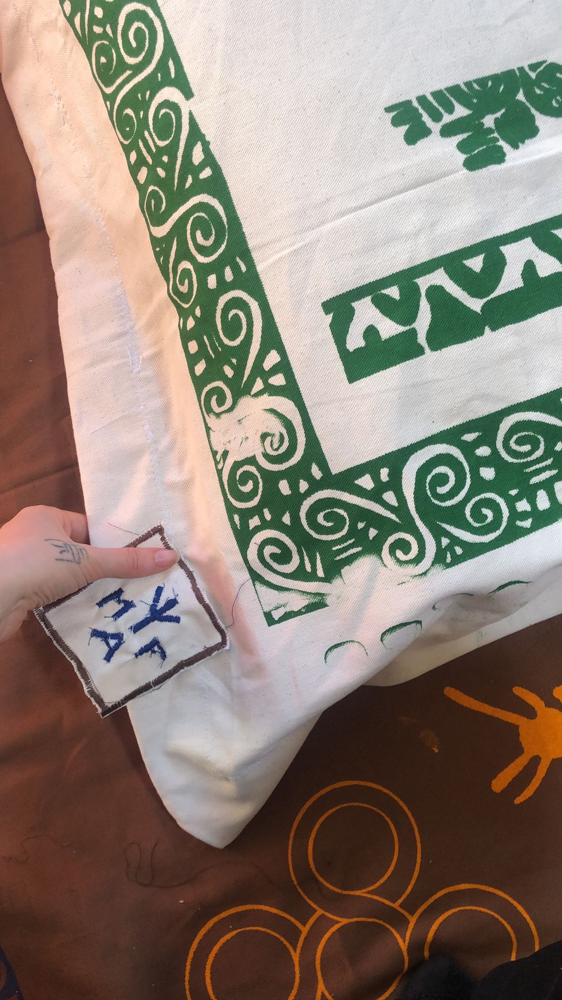
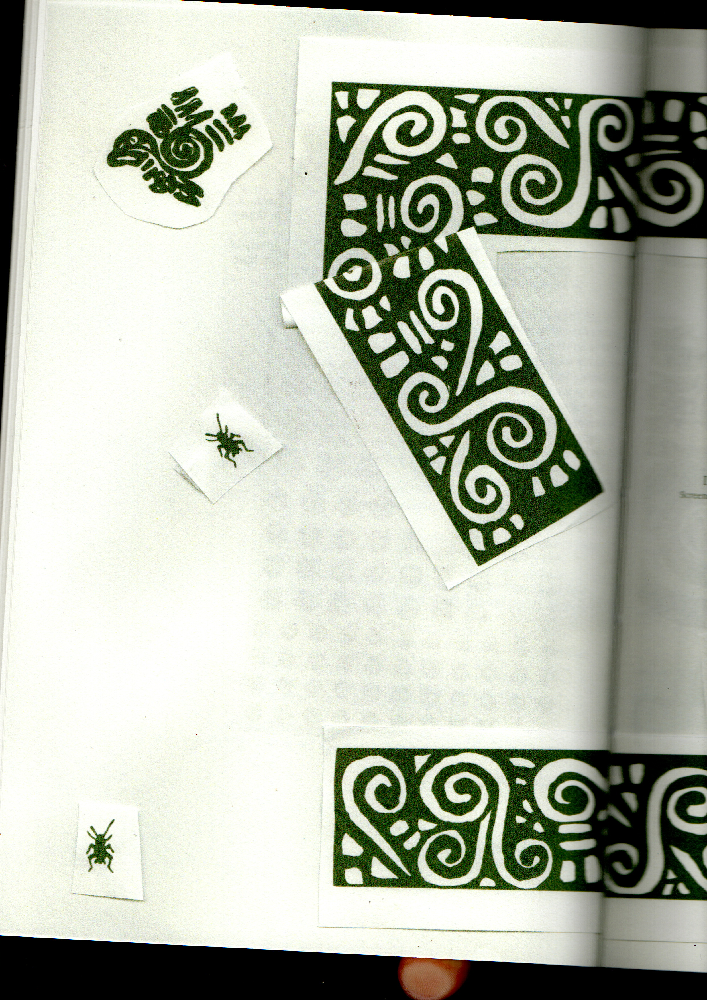
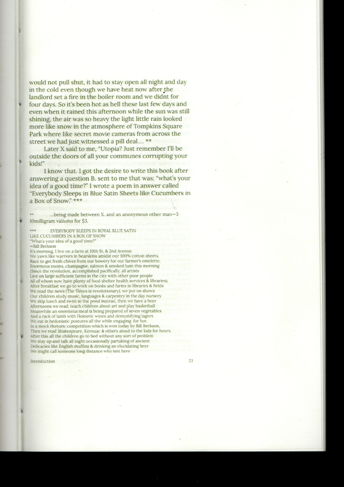
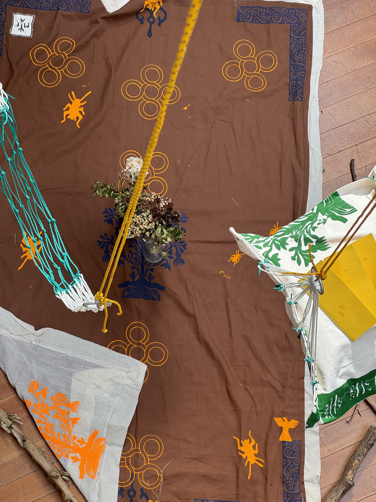
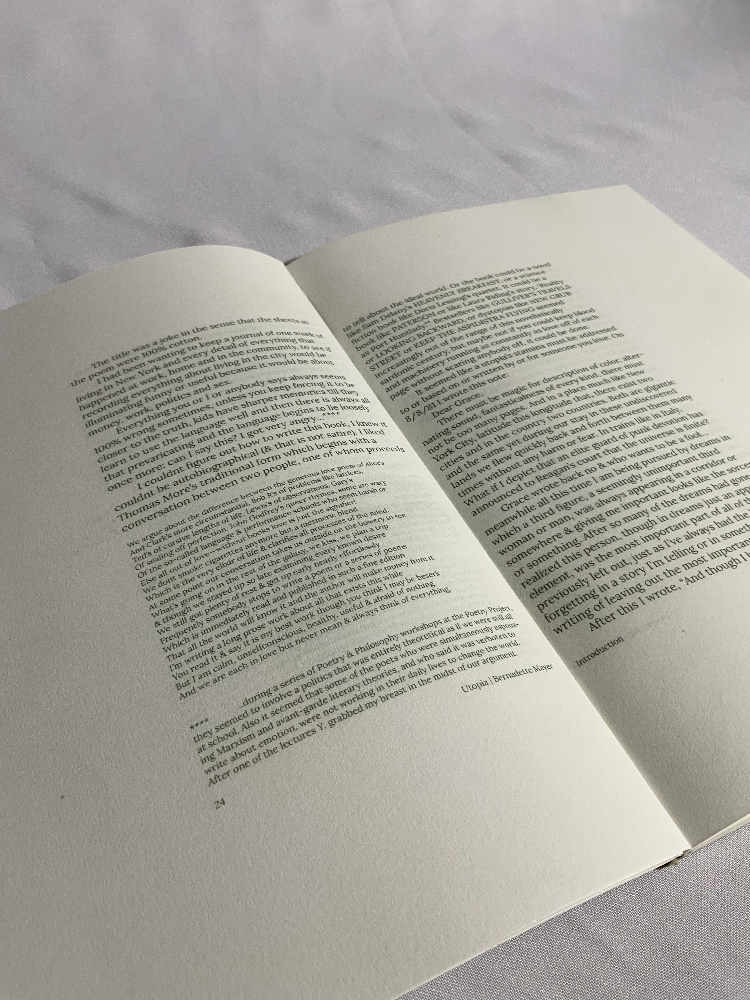
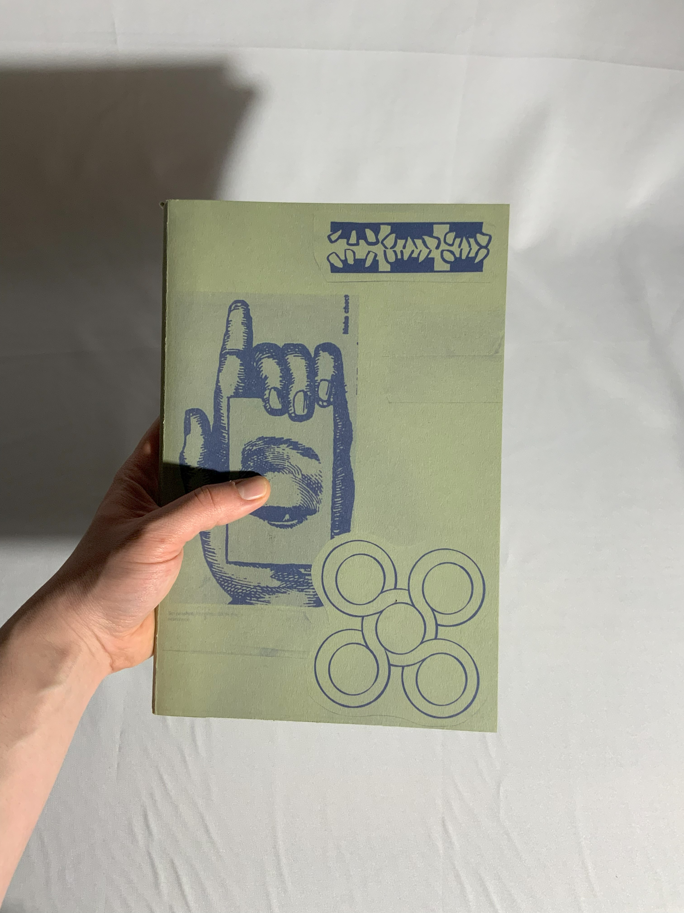

This project is a reissue of selected chapters from Utopia by Bernadette Mayer, created for an exhibition with Alex Rainer and Maya Curé. Blending literature, printmaking, the exhibition featured screenprints sourced from JSTOR.org, with visuals taken from IKON, part of the Independent Voices collection.
Exhibition with
Alex Rainer & Maya Curé
a bubble
Photography
Adobe Lightroom / Photoshop
Photos / Book — Inkjet Printing


We all live in bubbles—shaped by perception, expectation, and identity. They feel safe and familiar but
can also trap us in a version of ourselves that isn’t completely true. Our bubble is comfortable, the
outside world is scary. We convince ourselves it’s better to stay where it’s predictable—echoing what
others say, doing what others do.
This photoshoot is a journey from self-doubt to self-acceptance, from feeling distorted to seeing clearly.
In the end, the bubble doesn’t disappear—it just transforms. It bends and expands, becoming a space shaped
by our own terms rather than others’ expectations.
Text by Juliana Migueis
Art Direction by Juliana Migueis
Model António José
Photography & Post by Driehoek
Time bender
Coding/Writing
Visual Studio — Html/Css/Javascript
Website — Digital
1/1
From a personal struggle with positioning myself inside the practice of Graphic Design within values that I find to be aligned with my own. How to work in an environment that respect natural temporalities, and where can I find this space inside the graphic design practice? From a need to escape the practice of graphic design that helped build the overproduction one finds in today’s society, to finding ways to create with a more relevant, informative and in constant renewal practice. Escaping authorship and individuality to find more communal, slow ways of working.
Inxarte portfolio
Coding
Visual Studio — Html/Css/Javascript
Website — Digital
1/1
Ines Gamboa’s portfolio website was designed as an alternative to the conventional portfolio format, creating a digital space that reflects her artistic vision and creative process. The design combines a distinctive layout with interactive elements and an intuitive navigation system, placing emphasis on presenting her work in an engaging and personal way.
Alien Shape
Coding
Visual Studio — Html/Css/Javascript
Website — Digital
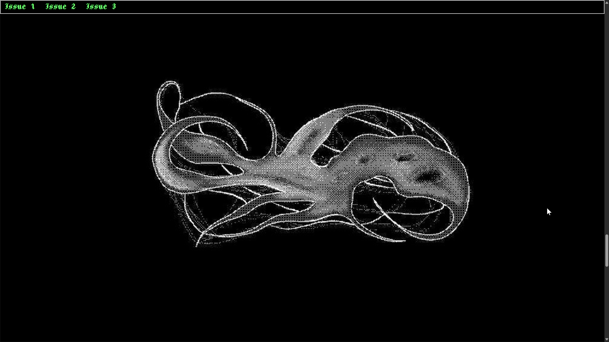
 (1).png)
 (2).png)
.png)
 (1).png)
 (2).png)
 (3).png)
 (4).png)
 (5).png)
 (6).png)
.png)
 (1).png)
This project explores, through multiple perspectives, the question of what aliens might look like. Combining interviews, drawings, and personal reflections, it invites viewers to imagine the unknown and reconsider how we picture life beyond our world. I created the illustrations for these imagined beings and developed a custom tool to dither the artwork, allowing me to process multiple images at once and achieve a distinctive, textured aesthetic.
My Music Wrap
Coding
Visual Studio — Html/Css/Javascript
Website — Digital


This project is a personal take on Spotify Wrapped, designed as a stylized website exploring database visualization. Visually, it draws inspiration from the Game Boy Color classic Mario Golf and the retro aesthetics of old TV teletext, blending data and nostalgia into a unique experience.
Wine Bottle Design
Design Practice
Adobe InDesign / Photoshop / ProCreate
Bottle Design — Inkjet Printing


Made the drawings inspired in bees wine vines/ small vineyard/ inspired delfware/ make a X symbolizing the 10years of existence of the vineyard/ Haagse stadswijngaard
Caligraphy Resit
Caligraphy
Sketchbook/ Photoshop
Motion — Analogue
Letter "A" exploration 3 letters per day during a week made into animation.
Fresco Film Festival
Graphic Design
Blender / InDesign / Premiere
Visual Identity — Digital/Inkjet Printing
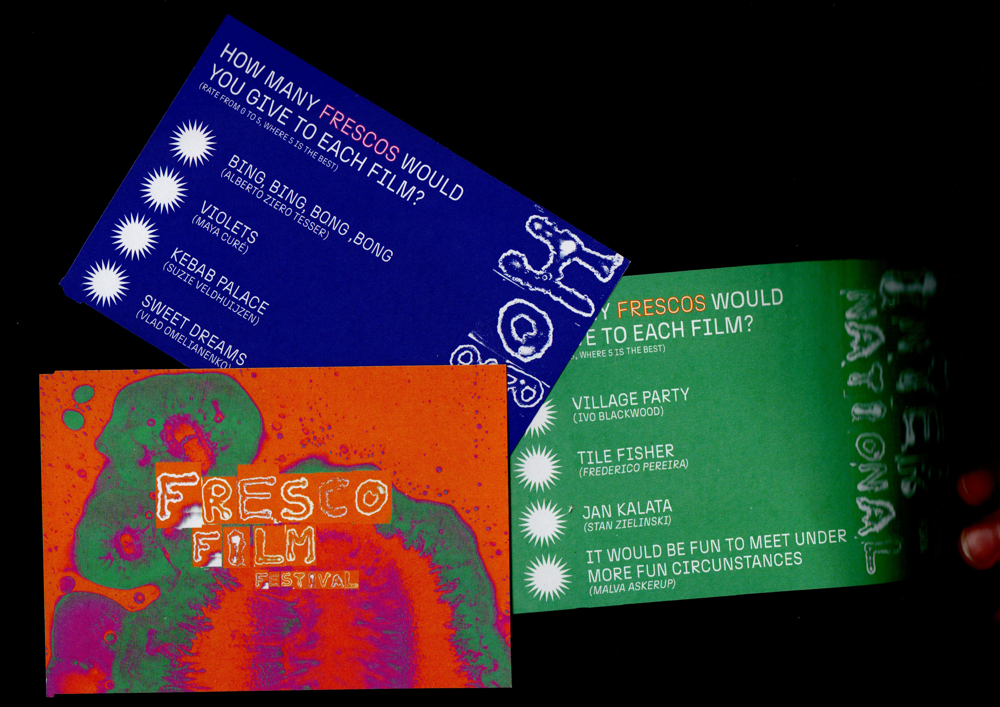
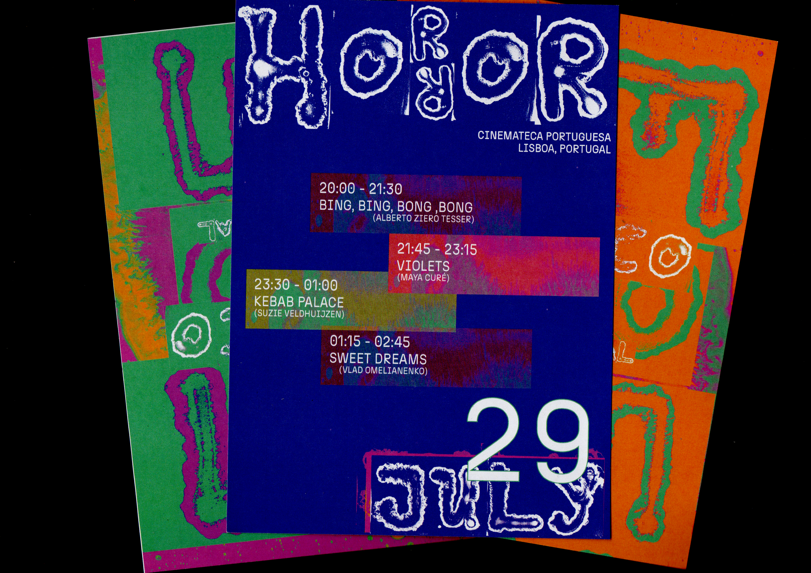
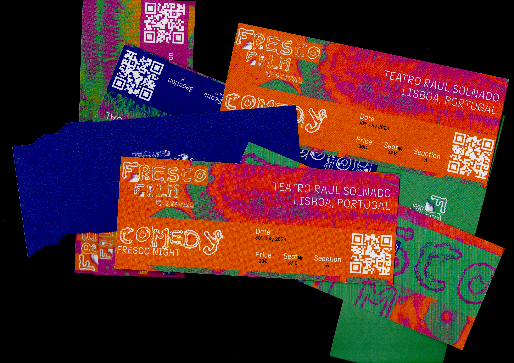
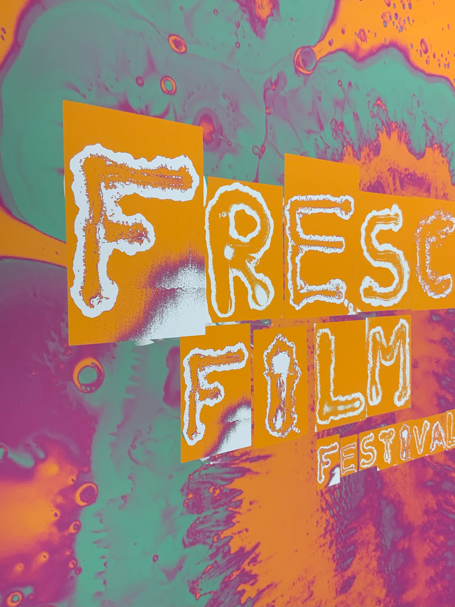
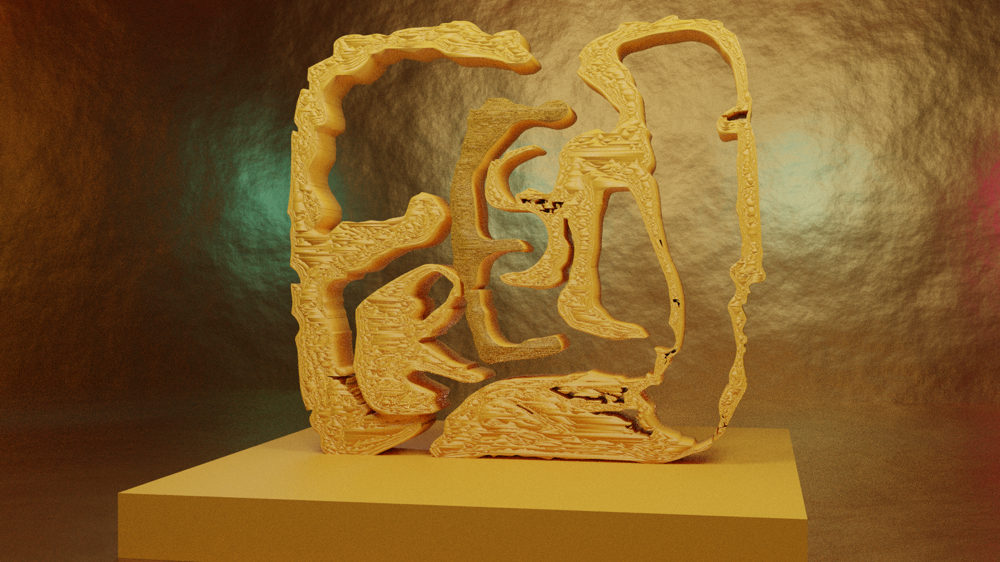
This project is the visual identity for Fresco Film Festival, an alternative film festival in Lisbon running from July 29 to August 1. Spread across three major venues, it showcases horror, comedy, and international films, ending with the Fresco Awards and an exclusive final party. The visuals, created through experiments with black ink and soap, give the festival a bold, organic look that reflects its unique and artistic spirit.